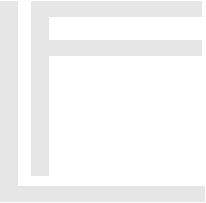

Switch the theme
The dark LifeFabs theme is the default. Use the header control to switch to the bright theme; the selection is stored in this browser.

LifeFabsFIELDNOTES / HYBRID LAB PROTOTYPE NOTESSETUP / VALIDATION
This is a static teaching prototype. It provides useful visualisation and consistency checks, not a certified robot simulator.
The dark LifeFabs theme is the default. Use the header control to switch to the bright theme; the selection is stored in this browser.
From the site directory run python -m http.server 8000, then visit http://localhost:8000/. Use HTTP because the OT-2 page fetches labware JSON and imports the CAD viewer library.
Push the directory to GitHub and select the repository root in Settings → Pages. Keep the folder structure intact so scripts, styles, JSON data and assets load at their relative paths.
Use the optional local simulation service to run the official Opentrons Python API simulator, then import the protocol in the Opentrons App and confirm its intended software/API version, pipette, labware and calibration before a dry-run.
ACCURACY BOUNDARY
Each bundled labware preset includes centre-bottom coordinates, well depth, and well pitch. A selected .bottom(z=…), .center(), or .top() target is computed relative to that well.
The deck drawing uses a nominal slot-grid layout. Optional X/Y/Z fields add a translation to the local frame; they do not model rotation or physical calibration.
The official API and robot settings account for deck calibration, pipette offsets, tip length, labware offsets and the installed setup. The web page doesn't model collision-free travel or prove that motion is safe.
Do not use the visualisation as an independent safety check. Validate code and labware in the Opentrons App and perform a controlled dry-run with the actual robot configuration.
Position API ↗ · Robot calibration ↗ · Official simulation ↗ · Local API service setup ↗